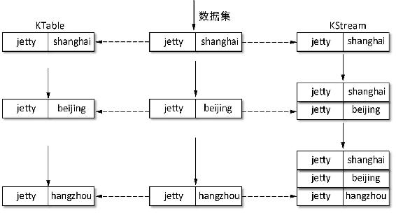

7.3 Kafka Streams API介绍
本节简单介绍Kafka Streams的部分API应用。为此，首先引入Kafka Streams的依赖包，在pom.xml文件中加入Kafka Streams的依赖。
<dependency>
<groupId>org.apache.kafka</groupId>
<artifactId>kafka-streams</artifactId>
<version>0.10.1.1</version>
</dependency>7.3.1 KStream与KTable
Kafka Streams为高层流定义了KStream和KTable两种抽象。KTable是一个日志更新流，即相同Key数据集是进行更新操作，同一个Key总是保留最新的值；KStream是一个记录流，每条数据集都是一个独立的数据单元。下面分别定义一个日志流和一个日志更新流，通过输出这两个流处理结果来看两者在数据处理上的区别。
在介绍具体实现之前，我们先通过Kafka shell创建一个主题，创建主题命令如下：
kafka-topics.sh --zookeeper server-1:2181,server-2:2181,server-3:2181 --create --topic streams-foo --partitions 1 --replication-factor 1Kafka Streams提供了一个KStreamBuilder类用于使用流DSL构建处理器拓扑，该类继承TopologyBuilder。然后通过KStreamBuilder类的stream()方法和table()方法分别创建一个KStream和KTable对象。
以Kafka主题streams-foo作为数据源创建一个KStream记录流，并通过print()方法将数据集输出到控制台。Kafka Streams提供了对处理结果多种处理方式，例如，通过print()方法输出到控制台，通过to()方法写入到一个Kafka主题，通过writeAsText()方法写入到文件。实现逻辑如代码清单7-1所示。
代码清单7-1 创建KStream日志流并输出数据集到控制台的代码片段
// 构造实例化KafkaStreams对象的配置
Properties props = new Properties();
// 指定流处理应用的id，该配置必须指定
props.put(StreamsConfig.APPLICATION_ID_CONFIG, "KStream-test");
props.put(StreamsConfig.BOOTSTRAP_SERVERS_CONFIG, "localhost:9092");
// Key序列化与反序化类
props.put(StreamsConfig.KEY_SERDE_CLASS_CONFIG, Serdes.String().getClass());
// Value序列化与反序化类
props.put(StreamsConfig.VALUE_SERDE_CLASS_CONFIG, Serdes.String().getClass());
props.put(ConsumerConfig.AUTO_OFFSET_RESET_CONFIG, "earliest");
KStreamBuilder builder = new KStreamBuilder();
// 构造KStream日志流
KStream<String, String> textLine= builder.stream("streams-foo");
// 输入日志流中数据
textLine.print();
KafkaStreams streams = new KafkaStreams(builder, props);
streams.start();
// 让线程休眠5秒
Thread.sleep(5000L);
streams.close();通过Kafka shell为“streams-foo”主题发送几条消息，启动生产者的命令如下：
kafka-console-producer.sh --broker-list server-1:9092,server-2:9092,server-3:9092 --topic streams-foo --property parse.key=true --property key.separator=" "该生产者指定消息Key和Value之间以空格分隔，在控制台输入以下信息：
jetty shanghai
jetty beijing
jetty Hangzhou运行KStream程序后，在控制台输出信息如下：
[KSTREAM-SOURCE-0000000000]: jetty , shanghai
[KSTREAM-SOURCE-0000000000]: jetty , beijing
[KSTREAM-SOURCE-0000000000]: jetty , hangzhou由KStream程序输出信息可知，每条数据集在日志流中都是一个独立的键值对。下面将代码构建KStream日志流这行代码修改为：
KTable<String, String> textLine = builder.table("streams-foo","KTable-test");
// 构造一个KTable更新流再次启动并运行该程序，在控制台输入信息如下：
[KTABLE-SOURCE-0000000001]: jetty , (hangzhou<-null)从输出信息可以看出，数据集经由KTable更新日志流后，相同key只会保留最新的一个值。以上数据集经由KStream和KTable处理的过程描述如图7-6所示。

图7-6 KStream和KTable对数据集进行处理的过程
同时，KTable与KStream可以相互转换，例如，KTable通过toStream()方法可以转为KStream。而KStream通过变换处理先转为KGroupedStream，然后由KGroupedStream转为KTable。
7.3.2 窗口操作
流式处理有时可能需要将数据划分成多个时间段，以时间窗口滑动的形式处理，即通常所说的流上的窗口操作。窗口操作一般在连接和聚合等保存本地状态的程序中使用。
在Kafka Streams应用中，我们说窗口操作主要是指KStream之间连接操作的JoinWindows以及聚合操作中使用的TimeWindows，这两个窗口都集成Windows类。通过指定窗口大小，将窗口内的数据集经过连接或聚合操作存储到状态仓库中
例如，指定KStream连接操作连接窗口为5min，可定义为：
JoinWindows.of(TimeUnit.MINUTES.toMillis(5));JoinWindows除继承父类的属性和方法外，自定义了before和after两个属性，分别表示join操作取在之前最大时间及之后最大时间跨度的数据集。若调用的是JoinWindows.of(long timeDifference)方法，则before=after=timeDifference；若调用的是JoinWindows.before(long timeDifference)方法，则before=timeDifference，after=0；若调用的是JoinWindows.after(long timeDifference)方法，则before=0，after=timeDifference。
时间窗口一般在聚合操作中使用，在7.2节介绍过时间窗口有3种，而滑动窗口即是KStream连接操作使用的JoinWindows，这里说的时间窗口是指由TimeWindows类定义窗口，主要指跳跃窗口和翻转窗口，两者的区别在于翻转窗口的滑动步长与窗口大小相等，这样一条数据只属于一个窗口。
通过TimeWindows.of(windowSizeMs).advanceBy(intervalMs)定义一个用于聚合操作的时间窗口，如在KGroupedStream类的count()操作时需要指定时间窗口，当windowSizeMs=intervalMs时即表示是翻转窗口，当windowSizeMs>intervalMs时表示是跳跃窗口。至于该定义是跳跃窗口还是翻转窗口则取决了应用场景。
7.3.3 连接操作
连接操作是通过键将两个流的记录进行合并，并生成新的流。Kafka Streams将流抽象为KStream和KTable两种类型，因此连接操作也是这两类流之间的操作。即KStream与KStream、KTable与KTable、KStream与KTable之间的连接。而KStream之间的连接操作往往是基于窗口的，否则每次所有数据都需再保存，这样记录就会无限增长。
连接操作要保证执行连接操作的KStrams或KTable数据源的分区数相同，同时生产者生产消息时分区分配策略相同，这样才能保证相同的键的消息分布在两个主题对应的分区相同。
Kafka Streams提供了内连接、左连接和外连接3种连接操作，分别对应join()方法、leftJoin()方法和outerJoin()方法。这3种连接操作与传统关系数据库的连接操作类似，因此对连接操作结果不进行深入介绍。下面简单介绍KStream与KTable之间的组合连接操作API的调用。
1．KStream与KStream连接
KStream之间的连接是基于时间窗口的，这从KStream的join()方法的参数就能体现出来，之所以是基于时间窗口，这是由于KStream中每一个记录流，若不集于时间窗口操作数据量达到一定程度时join操作的是一件很可怕的事，而且也是没有必要的。假设我们定义两个KStream，两个KStream之间的连接操作的示例实现如代码清单7-2所示。
代码清单7-2 KStream之间的连接操作的简单样例代码
final Serde<String> stringSerde = Serdes.String();
KStreamBuilder builder = new KStreamBuilder();
KStream<String, String> leftStream = builder.stream(stringSerde, stringSerde,
"left-source");
KStream<String, String> rightSteam = builder.stream(stringSerde, stringSerde,
"right-source");
KStream<String, String> joinedStream = leftStream.join(rightSteam,
new ValueJoiner<String, String, String>() {
@Override
public String apply(String leftValue, String rightValue) {
return "left:" + leftValue + ", right:" + rightValue;
}
}, JoinWindows.of(TimeUnit.MINUTES.toMillis(5)),// 指定时间窗口为5 min
Serdes.String(), Serdes.String(), Serdes.String());代码清单7-2表示两个KStream进行内连接操作，指定时间窗口为5min。连接操作执行两个流值的合并是在ValueJoiner的apply()方法中完成的。这样无论是leftStream还是rightStream有新数据集到达时都会触发join操作（这里直接借用代码清单7-2中定义的变量名leftStream和rightStream来描述join操作的两个KStream）。例如，当leftStream收到一条消息时，就会从rightStream的本地状态仓库中取最近5min内数据执行join操作。如果将leftStream和rightStream看成数据库的两张表，当leftStream收到一条消息时，触发join操作逻辑类比SQL语句的话，对应的SQL语句如代码清单7-3所示；当righStream收到一条消息执行原理同leftStream。
代码清单7-3 leftStream收到一条数据集与rightStream执行join操作类SQL语句
SELECT *
FROM leftStream as lf
INNER JOIN leftStream as rt
ON lf.key = rt.key AND rt.timestamp+timewindow >=lf.timestamp AND lf.timestamp = ${新
数据的时间戳}在代码清单7-3所示的SQL语句中，timewindow即指我们设置的JoinWindows。JoinWindows继承Windows类，实质也是一种TimeWindow。代码清单7-3所示的SQL语句仅是从单侧来表达join操作某个时间点的执行状态，对于join操作我们可用代码清单7-4所示的通用SQL来描述。
代码清单7-4 join操作类SQL语句表述
SELECT *
FROM stream1, stream2
WHERE stream1.key = stream2.key AND stream1.ts - before <= stream2.ts AND stream2.ts
<= stream1.ts + after对于join操作左连接和外连接实现步骤与代码清单7-2类似，只需修改连接方式这行代码为相应的连接方式。
2．KTable与KTable连接
由于KTable是一个更新日志流，相同Key的记录只会保存最新的值，也就是说，对同一个Key而言无论何时都只会有一条最新记录，因此KTable连接操作无需时间窗口。一个简单KTable之间的内连接操作的核心逻辑如代码清单7-5所示。左连接及外连接在代码实现上仅是方法调用的区别，不再一一介绍。在ValueJoiner的apply()方法中对两个KTable数据集的值进行处理，这里依然是简单拼接成字符串。
代码清单7-5 KTable之间操作的简单样例代码
final Serde<String> stringSerde = Serdes.String();
KStreamBuilder builder = new KStreamBuilder();
KTable<String, String> leftTable = builder.table(stringSerde, stringSerde, "left-source",
"ktable-join-left");
KTable<String, String> rightTable = builder.table(stringSerde, stringSerde, "right-
source","ktable-join-right");
KTable<String, String> joinedTable = leftTable.join(rightTable,new ValueJoiner<String,
String, String>() {
@Override
public String apply(String leftValue, String rightValue) {
return "left:" + leftValue + ", right:" + rightValue;
}
});3．KStream与KTable连接
当前版本的Kafka Streams只支持KStream与KTable进行左连接，并不支持内连接及外连接。同时也只支持KStream左连接KTable，而支持KTable连接KStream。KStream与KTable左连接得到一个KStream，左连接操作右边连接数据的变化并不会触发join操作。当右边连接为KTable时，右边数据的变化仅是更新右边数据流。KStream与KTable左连接的实例代码如代码清单7-6所示。
代码清单7-6 KStream与KTable左连接的实例代码
final Serde<String> stringSerde = Serdes.String();
KStreamBuilder builder = new KStreamBuilder();
KStream<String, String> kstream = builder.stream(stringSerde, stringSerde, "left-
source");
KTable<String, String> ktable = builder.table(stringSerde, stringSerde, "right-source",
"kstream-ktable-join");
KStream<String, String> joinedStream = kstream.leftJoin(ktable, new ValueJoiner<String,
String, String>() {
@Override
public String apply(String leftValue, String rightValue) {
return "left:" + leftValue + ", right:" + rightValue;
}
}, Serdes.String(), Serdes.String());7.3.4 变换操作
Kafka Streams提供了流变换处理的基本函数，包括过滤操作的filter()，分组操作的GroupBy()和groupByKey()，映射操作的map()、mapValues()、flatMap()和flatMapValues()，以及转换函数transform()等。这些变换操作都可以将一个KStream和KTable对象变换为另一个KStream或KTable对象并且传给下游处理拓扑，将所有的操作连接起来就组成了一个复杂的处理拓扑。
我们通过一个简单的单词统计实例简单介绍Kafka Streams基本变换函数的应用。待统计的单词之间以逗号分隔保存在streams-foo主题当中。
首先以Kafka主题streams-foo作为数据源创建一个KStream记录流，如代码清单7-7所示。
代码清单7-7 以Kafka主题streams-foo作为数据源创建一个KStream记录流
Properties props = new Properties();
props.put(StreamsConfig.APPLICATION_ID_CONFIG, "wordcount");
props.put(StreamsConfig.BOOTSTRAP_SERVERS_CONFIG, "localhost:9092");
props.put(StreamsConfig.KEY_SERDE_CLASS_CONFIG, Serdes.String().getClass());
props.put(StreamsConfig.VALUE_SERDE_CLASS_CONFIG, Serdes.String().getClass());
props.put(ConsumerConfig.AUTO_OFFSET_RESET_CONFIG, "earliest");
KStreamBuilder builder = new KStreamBuilder();
// 构造一个KStream日志流
KStream<String, String> textLine = builder.stream("streams-foo");然后通过filter()方法处理过滤掉无效数据，我们在这里只去掉空行，实现代码如下：
KStream<String, String> filteredLine= textLine.filter(new Predicate<String, String>()
@Override
public boolean test(String key, String value) {
// 过滤操作，将不满足条件的数据去掉，当返回为false表示将该条数据集过滤掉
if(StringUtils.isBlank(value)){
return false;
}
return true;
}
});在filter()方法中我们定义一个过滤规则，创建一个匿名类，在Predicate接口的test()方法中指定过滤规则，当满足某些条件返回false表示该条数据将被过滤掉。
然后通过flatMapValues()方法按行解析出单词，将单词放入一个迭代器中，代码如下：
KStream<String, String> wordStream = filteredLine.flatMapValues(new ValueMapper
<String, Iterable<String>>() {
@Override
public Iterable<String> apply(String value) {
return Arrays.asList(value.toLowerCase(Locale.getDefault()).split(","));
// 单词不区分大小写
}
});同时，为了通过groupByKey()方法将单词分组，我们再通过map()函数进行处理，将每个单词构造成KeyValue实体，每一个KeyValue实体的键与值相同，即为单词本身。代码如下：
KStream<String, String> wordPairs = wordStream.map(new KeyValueMapper<String, String,
KeyValue<String,String>>() {
@Override
public KeyValue<String, String> apply(String key, String value) {
return new KeyValue<String, String>(value, value);
}
});在构造KeyValue之后将单词按键分组，代码如下：
KGroupedStream<String, String> wordGroup= wordPairs.groupByKey();通过groupByKey()方法处理后将KStream变换成了一个KGroupStream对象，KGroupStream与KStream的区别在于KGroupStream是由 KStream中的每条数据集按照一定规则进行分组得到的分组日志流。
在分组之后通过调用count(final String storeName)方法统计每组单词的个数，并将统计结果打印输出。从这个方法的形参可以得到该方法是有状态的，需要保存状态结果。代码如下：
KTable<String,Long> words=wordGroup.count("word-count");
words.print();可以看到经由count()变换后将KGroupStream转换成了一个KTable对象。
至此单词统计的核心逻辑已完成，然后我们创建一个KafkaStreams对象并启动。最后通过Kafka shell输入几行数据，如图7-7所示（其中第2行和第6行是空行）。
图7-7 单词统计样本
启动单词统计程序，在控制台的输出信息如图7-8所示。

图7-8 单词统计的输出结果
在Kafka shell中输入统计样本，每次执行该程序时每个单词数都是基于上次结果累加，这是因为count()操作是有状态的，执行结果会保存到本地存储仓库中，每次执行都会从本地查询上次的执行结果。
7.3.5 聚合操作
聚合操作是一种有状态的转换，在上一小节单词统计实例最后计算单词数的count()方法就是聚合操作的一种。本书所用Kafka Streams只实现了count()方法，但Kafka Streams定义一个aggregate()方法，同时提供了一个Aggregator接口，我们可以通过该接口的apply()方法，在该方法中实现聚集函数的相应功能，如求max、min、avg、count、sum等操作，Kafka Streams提供的count()方法，也是通过调用aggregate()方法实现的。日志流和更新日志流都有appregate()方法，不过在进行聚合操作前需要将KStream或KTable转为KGroupedStream或KGroupedTable，然后再调用appgregate()方法执行聚合操作。
现在通过Kafka Streams计算一组数据的最大值的简单程序来介绍Kafka Streams聚合类操作。对于KStream日志流，首先通过groupByKey()方法将KStream转为KGroupedStream，然后调用aggregate()方法，实现逻辑如代码清单7-8所示。
代码清单7-8 KStream聚合操作求最大值的核心代码
kstream.map(new KeyValueMapper<String, String, KeyValue<String,Integer>>() {
@Override
public KeyValue<String, Integer> apply(String key, String value) {
return new KeyValue<String, Integer>(key, Integer.parseInt(value));
}})
.groupByKey(Serdes.String(),Serdes.Integer())
.aggregate(new Initializer<Integer>() {
@Override
public Integer apply() {
return Integer.MIN_VALUE ;
}}, new Aggregator<String, Integer, Integer>() {
@Override
public Integer apply(String aggKey, Integer value, Integer aggregate) {
return value > aggregate?value : aggregate;
}
},Serdes.Integer() , "max")由于是求最大值，所以在Initializer接口的apply()方法中设置初始值为Integer.MIN_VALUE，然后实现Aggregator接口在其apply()方法中比较该Key的新、老值返回较大者。代码清单7-8所示代码是基于JDK7编写的，如果用JDK8的Lambda表达式，则可将代码简化如代码清单7-9所示。
代码清单7-9 KStream聚合操作求最大值核心代码的JDK8实现
kstream.map((key, value) -> {return new KeyValue<String, Integer>(key,
Integer.parseInt(value)); }) // 将String类型转为Integer
.groupByKey(Serdes.String(),Serdes.Integer())
.aggregate( () -> Integer.MIN_VALUE,
(String key, Integer value,Integer aggregate) -> {return value > aggregate ? value:
aggregate;}, Serdes.Integer(), "max")对于KStream日志流还提供了一个基于时间窗口的aggregate()方法，如果求1min之内的数据集的最大值，则关于调用aggregate()方法实现的逻辑修改如下：
aggregate(() -> Integer.MIN_VALUE, (String key,Integer value,Integer aggregate) ->{return value > aggregate ? value : aggregate;}, TimeWindows.of(60 * 1000L).advanceBy(60*1000L), Serdes.Integer(), "max2").toStream().print();当将时间窗口设置为UnlimitedWindows.of()时即等同于不带时间窗口的集合操作。
如果对KTable对象通过聚合操作求最值，需要注意的是实例化KTable时需保证值的类型为数值型，如Integer、Long等，因为聚合操作时状态值会保存到aggregate()方法指定的状态仓库，这个状态仓库保存的值为数值类型，aggregate()方法指定的状态值的类型要与创建KTable指定值的类型一致，因此KTable就要求被定义为KTable<String, Integer>类型，这就要求生产者需指定消息的值序列化类型为数值类型对应的序列化类。
KTable通过聚合操作求最值的实现逻辑如代码清单7-10所示。
代码清单7-10 KTable更新流聚合操作求最值的实现代码
Properties props = new Properties();
props.put(StreamsConfig.APPLICATION_ID_CONFIG, "ktable-aggregate-test");
props.put(StreamsConfig.BOOTSTRAP_SERVERS_CONFIG, "localhost:9092");
props.put(StreamsConfig.KEY_SERDE_CLASS_CONFIG, Serdes.String().getClass());
// Key序列化与反序化类
props.put(StreamsConfig.VALUE_SERDE_CLASS_CONFIG, Serdes.Integer().getClass());
// Value序列化与反序化类
props.put(StreamsConfig.COMMIT_INTERVAL_MS_CONFIG, "1000");
props.put(StreamsConfig.POLL_MS_CONFIG, "10");
KStreamBuilder builder = new KStreamBuilder();
KTable<String, Integer> ktable = builder.table("ktable-aggregate",
"ktable-aggregate-store");// 指定值的类型为Integer
ktable.groupBy((String key, Integer value) -> {return new KeyValue<String, Integer>
(key, value); } ,Serdes.String(), Serdes.Integer())
.aggregate( () -> Integer.MIN_VALUE,
(key, value, aggregate) -> value > aggregate ? value: aggregate,
(key, value, aggregate) -> value > aggregate ? value: aggregate, "ktable-max").
toStream().print();
KafkaStreams streams = new KafkaStreams(builder, props);
streams.start();Table of contents
- 版权信息
- 内容提要
- 前言
- 第1章 Kafka简介
- 第2章 Kafka安装配置
- 第3章 Kafka核心组件
- 第4章 Kafka核心流程分析
- 第5章 Kafka基本操作实战
- 第6章 Kafka API编程实战
- 第7章 Kafka Streams
- 第8章 Kafka数据采集应用
- 第9章 Kafka与ELK整合应用
- 第10章 Kafka与Spark整合应用
- 欢迎来到异步社区！